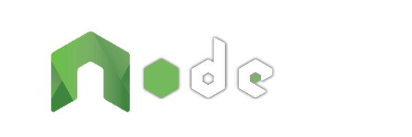

The Progressive Server-side JavaScript Framework
-
Simple set-up
You know HTML & CSS?
But not JavaScript?Quickly create multilingual websites effortlessly with simple routes, views or variations.
-
Scalable website
JavaScript client-side Expert?
Ready to embrace Node.js?Gradually improve your base as you need by using controllers, models or modules.
-
Agnostic client side
Already your Front-end habits?
You use Data Binding?From Vanilla to jQuery and going through Vue, Angular or React: use your favorite tools!
Controller Part
NodeAtlas is useful for more than simply generate template web page easily based on your variations files. NodeAtlas allow you to dynamically interact with variations var and with the DOM with usage of:
- parameters in the query part of URL (GET),
- parameters in request body (POST),
but also, using natives features from Node.js or npm, interact usage of:
- data from files,
- data from databases,
- data from active user sessions,
- data provide from WebSockets exchanges,
- and more!
Lifecycle
NodeAtlas lifecycle works as following. First, resources are loaded, the server start, routes are added and all is up. Then, for each HTTP request, a response is generated. You could use hooks while server start and while the response is constructed.
This is a webconfig.json allows you to manipulate each hook of lifecycle of a page.
{
"controllersRelativePath": "controllers",
"controller": "common.js",
"routes": {
"/": {
"view": "index.htm",
"controller": "index.json"
}
}
}Note: if controllersRelativePath is not present in webconfig.json, default controller folder is controllers. controllersRelativePath is useful only to change the name/path of directory.
and this is all hooks you can use while:
Starting the server
┌─[Loading Node.js Modules]
┊
├─[Loading Init Vars]
┊
├─[Loading npm Modules]
┊
├─[Setting CLI Commands and Language]
┊
├─[Setting API Options]
┊
└─[Loading CLI Language]
┊
├─[Loading Global Vars]
┊
├─[Setting Webconfig Instructions]
┊
└─[Loading Common Controller]
┊ ______________________________
├─{Hook : <controller>.setModules}
┊ ‾‾‾‾‾‾‾‾‾‾‾‾‾‾‾‾‾‾‾‾‾‾‾‾‾‾‾‾‾‾
├─[Server Init]
┊ _______________________________
├─{Hook : <controller>.setSessions}
┊ ‾‾‾‾‾‾‾‾‾‾‾‾‾‾‾‾‾‾‾‾‾‾‾‾‾‾‾‾‾‾‾
├─[Sessions Init]
┊
├─[Sockets Init]
┊ ┊ ______________________________
┊ ├─{Hook : <controller>.setSockets}_______
┊ └─{Hook : routes[<controller>].setSockets}
┊ ‾‾‾‾‾‾‾‾‾‾‾‾‾‾‾‾‾‾‾‾‾‾‾‾‾‾‾‾‾‾‾‾‾‾‾‾‾‾
┊ _____________________________________
├─{Hook : <controller>.setConfigurations}
┊ ‾‾‾‾‾‾‾‾‾‾‾‾‾‾‾‾‾‾‾‾‾‾‾‾‾‾‾‾‾‾‾‾‾‾‾‾‾
└─[Starting the server]
┊
├─[Template Engine Init]
┊ _____________________________
├─{Hook : <controller>.setRoutes}
┊ ‾‾‾‾‾‾‾‾‾‾‾‾‾‾‾‾‾‾‾‾‾‾‾‾‾‾‾‾‾
└─[Routes Init]
┊
∞Processing a request
∞
┊
└─[Processing a request]
┊
└─[Loading Specific Controller]
┊ ____________________________________
├─{Hook : <controller>.changeVariations}_______
├─{Hook : routes[<controller>].changeVariations}
┊ ‾‾‾‾‾‾‾‾‾‾‾‾‾‾‾‾‾‾‾‾‾‾‾‾‾‾‾‾‾‾‾‾‾‾‾‾‾‾‾‾‾‾‾‾
└─[Template Engine Compilation]
┊ _____________________________
├─{Hook : <controller>.changeDom}_______
├─{Hook : routes[<controller>].changeDom}
┊ ‾‾‾‾‾‾‾‾‾‾‾‾‾‾‾‾‾‾‾‾‾‾‾‾‾‾‾‾‾‾‾‾‾‾‾‾‾
└─[Send Response]
┊
∞changeVariations Hook
In order to intercept variations, you could use the common controller for all the website page and/or also a specific controller per page.
changeVariations(next, locals, request, response) is a function to exports and provide:
NAobject asthis.- A callback function
next()in the first argument. - An object
localsin the second argument with thelocals.commonfor common variations and thelocals.specificfor specific variations. - The
requestobject in the third argument for this page. - The
responseobject in the fourth argument for this page.
This is an example using the two hooks, the common in first and after the specific:
{
"urlRelativeSubPath": "example",
"controller": "common.js",
"variation": "common.json",
"routes": {
"/": {
"view": "index.htm",
"variation": "index.json",
"controller": "index.js"
}
}
}with this files :
├─ variations/
│ ├─ common.json
│ └─ index.json
├─ controllers/
│ ├─ common.js
│ └─ index.js
├─ views/
│ ├─ partials/
│ │ ├─ head.htm
│ │ └─ foot.htm
│ └─ index.htm
└─ webconfig.jsonDo a POST request on http://localhost/example/?title=MachinisteWeb with example=This+is+a+test variable in body will use the following files:
variations/common.json
{
"titleWebsite": "Site Title"
}variations/index.json
{
"titlePage": "Welcome",
"content": "<p>This is the Home Page.</p>"
}views/index.htm
<?- include("partials/head.htm") ?>
<div class="title"><?- common.titleWebsite ?></div>
<div>
<h1><?- specific.titlePage ?></h1>
<?- specific.content ?>
</div>
<?- include("partials/foot.htm") ?>controllers/common.js
// This code is executed before variation are injected into template engine.
// This code is executed for all HTTP request, for all pages.
exports.changeVariations = function (next, locals, request, response) {
// Here we update `locals` variable.
console.log(locals.common.titleWebsite); // `"Site Title"`
console.log(locals.specific.titlePage); // `"Welcome"`
console.log(locals.specific.content); // `"This is the Home Page."`
console.log("urlRootPath", locals.urlRootPath); // `"http://localhost"`
console.log("urlSubPath", locals.urlSubPath); // `"/example"`
console.log("urlBasePath", locals.urlBasePath); // `"http://localhost/example"`
console.log("urlFilePath", locals.urlFilePath); // `"/"`
console.log("urlQueryPath", locals.urlQueryPath); // `"?title=MachinisteWeb"`
console.log("urlPath", locals.urlPath); // `"http://localhost/example/?title=MachinisteWeb"`
if (request.query["title"]) {
locals.specific.titlePage = locals.specific.titlePage + " " + request.query.title;
}
if (request.body["example"]) {
locals.specific.content = request.body.example;
}
console.log(locals.common.titleWebsite); // `"Site Title"`
console.log(locals.specific.titlePage); // "Welcome MachinisteWeb"
console.log(locals.specific.content); // `"This is a test"`
// We continue with next steps.
next();
};controllers/index.js
// This code is executed before variation are injected into template engine.
// This code is executed only for the `/` page.
exports.changeVariations = function (next, locals, request, response) {
// Here we update `locals` variable.
console.log(locals.common.titleWebsite); // `"Site Title"`
console.log(locals.specific.titlePage); // `"Welcome MachinisteWeb"`
console.log(locals.specific.content); // `"This is a test"`
locals.common.titleWebsite = `"It's Home, no way."`;
locals.specific.content = `"It's Home, no way."`;
console.log(locals.common.titleWebsite); // `"It's Home, no way."`
console.log(locals.specific.titlePage); // `"Welcome MachinisteWeb"`
console.log(locals.specific.content); // `"It's Home, no way."`
// We continue with next steps.
next();
};this produce the following output:
<!DOCTYPE html>
<html lang="en-us">
<head>
<meta charset="utf-8" />
<title>It's Home, no way.</title>
</head>
<body>
<div class="title">It's Home, no way.</div>
<div>
<h1>Welcome MachinisteWeb</h1>
It's Home, no way.
</div>
</body>
</html>If you delete the variation entry of specific page from webconfig:
{
"controller": "common.js",
"variation": "common.json",
"routes": {
"/": {
"view": "index.htm",
"variation": "index.json"
}
}
}the output will be the following:
<!DOCTYPE html>
<html lang="en-us">
<head>
<meta charset="utf-8" />
<title>Site Title</title>
</head>
<body>
<div class="title">Site Title</div>
<div>
<h1>Welcome MachinisteWeb</h1>
This is a test
</div>
</body>
</html>changeDom Hook
In order to intercept DOM before it was sent, you could use the common controller for all the website page and/or also a specific controller per page.
changeDom(next, locals, request, response) is a function to exports and provide :
NAobject asthis.- A callback function
next([dom])in the first argument which accepts an optional first updateddomargument used to manipulate the Virtual DOM. - An object
localsin the second argument with thelocals.domstring that contains the response or thelocals.virtualDom()function creating a usable Virtual DOM. - The
requestobject in the third argument for this page. - The
responseobject in the fourth argument for this page.
This is an example using the two hooks, the common for all pages in first and after the specific:
{
"controller": "common.js",
"variation": "common.json",
"routes": {
"/": {
"view": "index.htm",
"variation": "index.json",
"controller": "index.js"
}
}
}with this files:
├─ variations/
│ ├─ common.json
│ └─ index.json
├─ controllers/
│ ├─ common.js
│ └─ index.js
├─ views/
│ └─ index.htm
└─ webconfig.jsonDo a request on http://localhost/ will use the following files (and others):
variations/common.json
{
"titleWebsite": "Site Title"
}variations/index.json
{
"titlePage": "Welcome",
"content": "<p>This is Home Page.</p>"
}views/index.htm
<!DOCTYPE html>
<html lang="en-us">
<head>
<meta charset="utf-8" />
<title><?- common.titleWebsite ?></title>
</head>
<body>
<div class="title"><?- common.titleWebsite ?></div>
<div>
<h1><?- specific.titlePage ?></h1>
<?- specific.content ?>
</div>
</body>
</html>controllers/common.js
// This code is executed before DOM was sent to client.
// This code is executed for all HTTP request, for all pages.
exports.changeDom = function (next, locals, request, response) {
// Transform HTML string into Virtual DOM.
var $ = locals.virtualDom();
// Just after eath h1 from HTML of `dom`...
Array.prototype.forEach.call(dom.window.document.getElementsByTagName("h1"), function (h1) {
// ...we create a div,
var div = dom.window.document.createElement('div');
// ...we inject the content of h1 into the div...
div.innerHTML = h1.innerHTML;
h1.parentNode.insertBefore(div, h1.nextElementSibling);
// ...and we delete the h1.
h1.parentNode.removeChild(h1);
});
// Return updates for reinject them into HTML string.
next(dom);
};controllers/index.js
// This code is executed before DOM was sent to client.
// This code is executed only for the « / » page .
exports.changeDom = function (next, locals, request, response) {
var NA = this,
jsdom = NA.modules.jsdom, // `jsdom` for manipulate Virtual DOM.
dom = new jsdom.JSDOM(locals.dom); // We load datas for manipulate it as a DOM.
// We update node content with `.title` class.
dom.window.document.getElementsByClassName("title")[0].textContent = "Content Update";
// We recreate a new HTML output with updates.
locals.dom = dom.serialize();
// We go to next step.
next();
};the output will be as following:
<!DOCTYPE html>
<html lang="en-us">
<head>
<meta charset="utf-8">
<title>Site Title</title>
</head>
<body>
<div class="title">Content Update</div>
<div>
<div>Welcome</div>
<p>This is Home Page.</p>
</div>
</body>
</html>setSockets Hook
In order to keep a real-time connection between your client-side and server-side across all pages opened on all browsers that run on all OS, you could define your WebSockets here. More details in Socket.IO part.
setSockets() is a function to exports and providing:
NAobject asthis.
This is an example using the two hooks, the common in first and after the specific:
{
"socketClientFile": "/node-atlas/socket.io.js",
"socketServerOptions": { "transports": ["polling", "websocket"] },
"controller": "common.js",
"routes": {
"/": {
"view": "index.htm",
"controller": "index.js"
}
}
}with this files:
├─ assets/
│ └─ javascripts/
│ └─ index.js
├─ controllers/
│ ├─ common.js
│ ├─ index.js
│ └─ test.js
├─ views/
│ └─ index.htm
└─ webconfig.jsonDo a request on http://localhost/ will use the following files (and others files):
views/index.htm
<!DOCTYPE html>
<html lang="en-us">
<head>
<meta charset="utf-8" />
<title>Websocket Example</title>
</head>
<body>
<div class="layout">
<div class="content"></div>
<div class="field">Write something : <input class="input" type="text"></div>
</div>
<script type="text/javascript" src="socket.io/socket.io.js"></script>
<script type="text/javascript" src="node-atlas/socket.io.js"></script>
<script type="text/javascript" src="javascripts/test.js"></script>
<script type="text/javascript" src="javascripts/index.js"></script>
</body>
</html>Note: if socketClientFile and socketServerOptions are not present in webconfig.json, default client file and server options for sockets for config sockets are /node-atlas/socket.io.js and { transports: ['polling', 'websocket'] }. socketClientFile. They are useful only to change the name of file or the sockets transports alloweds. If you set socketClientFile to false, the client file will be not adding on accessible routes.
assets/javascripts/test.js
(function (expose, factory) {
if (typeof module !== 'undefined' && module.exports) {
module.exports = factory;
} else {
expose.Test = factory;
}
}(this, function () {
if (NA.isClient) {
console.log("Client");
} else {
console.log("Server");
}
}));controllers/common.js
// This code is executed for each WebSocket request/response on server.
// This code is executed for all WebSocket from Client.
exports.setSockets = function () {
var NA = this,
io = NA.io;
io.on('connection', function (socket) {
console.log("A tab is opened.");
socket.on('disconnect', function () {
console.log("A tab is closed.");
});
});
};controllers/index.js
// This code is executed for each WebSocket request/response on server.
// This code is executed for all WebSocket from client.
exports.setSockets = function () {
var NA = this,
path = NA.modules.path,
io = NA.io;
require(path.join(NA.serverPath, NA.webconfig.assetsRelativePath, "javascripts/test.js"))(); // display `Server`
// Wait for a valid connection between client and servere.
io.sockets.on("connection", function (socket) {
// A page says the text has changed.
socket.on("update-text", function (data) {
// We say to all others page the page has changed.
io.sockets.emit("update-text", data);
});
});
};assets/javascripts/index.js
var content = document.getElementsByClassName("content")[0],
input = document.getElementsByClassName("input")[0];
Test(); // display `Client`
// We say to others we just change text.
input.addEventListener("keyup", function () {
content.innerHTML = input.value;
NA.socket.emit("update-text", {
text: input.value
});
});
// Others says they changed the text.
NA.socket.on("update-text", function (data) {
content.innerHTML = data.text;
input.value = data.text;
});You will see, opening different browsers and tabs. All is updated in all tabs. Each tab open display the connection message and each tab closed display the disconnection message on the server console.
Note: you can change the node-atlas/socket.io.js file by a file provided by you in order to change optionsSocket variable. You can also change NA.optionsSocket in a front-side file, before inserting of node-atlas/socket.io.js with a custom option object.
setModules Hook
To load others modules which not include into NodeAtlas, you can use the common controller for all the website in order to load it once and use modules anywhere in all controllers.
setModules() is a function to exports and providing:
NAobject asthis.
This is an example using an external module of NodeAtlas:
{
"controller": "common.js",
"routes": {
"/": {
"view": "index.htm",
"controller": "index.js"
}
}
}with this set of files:
├─ controllers/
│ ├─ common.js
│ └─ index.js
├─ views/
│ └─ index.htm
└─ webconfig.jsonDo a request on http://localhost/ will use the following files (and others files):
views/index.htm
<!DOCTYPE html>
<html lang="en-us">
<head>
<meta charset="utf-8" />
<title>Module Test</title>
</head>
<body>
<div class="title">Module Test</div>
<div>
<h1>Module Test</h1>
<?- example ?>
</div>
</body>
</html>controllers/common.js
// This code is executing during the modules loading phase.
// This code will be executed when NodeAtlas starting.
exports.setModules = function () {
// Use the NodeAtlas instance from engine.
var NA = this;
// Associate each modules to allow us to use them anywhare.
NA.modules.marked = require('marked');
};controllers/index.js
// This code is executed before variation are injected into template engine.
// This code is executed only for the `/` page .
exports.changeVariations = function (next, locals) {
// Use the NodeAtlas instance from engine.
var NA = this,
marked = NA.modules.marked;
variations.example = marked("I am using __markdown__.");
// We do next step.
next();
};this will produce the following output:
<!DOCTYPE html>
<html lang="en-us">
<head>
<meta charset="utf-8" />
<title>Module Test</title>
</head>
<body>
<div class="title">Module Test</div>
<div>
<h1>Module Test</h1>
<p>I am using <strong>markdown</strong>.</p>
</div>
</body>
</html>setConfigurations Hook
To configure NodeAtlas web server others (Express), you can use the common controller to set configurations before the server start.
setConfigurations(next) is a function to exports and providing:
NAobject asthis.- A callback function
next()in first argument.
This is an example using a middleware for Express:
{
"controller": "common.js",
"routes": {
"/": {
"view": "index.htm",
"controller": "index.js"
}
}
}with this set of files:
├─ controllers/
│ ├─ common.js
│ └─ index.js
├─ views/
│ └─ index.htm
└─ webconfig.jsonDo a request on http://localhost/ will use the following files (and others files):
views/index.htm
<?- content ?>controllers/common.js
// This code is executing before starting of the web server.
// This code will be executed when NodeAtlas starting.
exports.setConfigurations = function (next) {
// Use the NodeAtlas instance from engine.
var NA = this;
// Middleware used for each request.
NA.express.use(function (request, response, next) {
response.setHeader("X-Frame-Options", "ALLOW-FROM https://www.lesieur.name/");
next();
});
// We do next steps.
next();
};controllers/index.js
// This code is executing before starting of the web server.
// This code is executed only for the `/` page .
exports.changeVariations = function (next, locals) {
// We prepare file for JSON displaying.
locals.routeParameters.headers = {
"Content-Type": "application/json; charset=utf-8"
};
locals.content = JSON.stringify(locals, null, " ");
// We do the next step.
next();
};this will produce the following output:
{
"urlRootPath": "http://localhost",
"urlSubPath": "",
"urlBasePath": "http://localhost",
"urlFilePath": "/",
"urlQueryPath": "",
"urlPath": "http://localhost/",
"params": {},
"query": {},
"body": {},
"routeParameters": { /* ... */ },
"route": "/",
"webconfig": { /* ... */ }
}setSessions Hook
To configure client-server Sessions of NodeAtlas, you can use the common controller to set sessions before the server start. this is an example with Redis sessions.
setSessions(next) is a function to exports and providing:
NAobject asthis.- A callback function
next()in first parameter.
This is all files for example:
├─ controllers/
│ └─ common.js
├─ views/
│ └─ index.htm
├─ variations/
│ ├─ common.json
│ └─ index.json
└─ webconfig.jsonWith the webconfig.json:
{
"controller": "common.js",
"routes": {
"/": {
"view": "index.htm"
}
}
}And common.js file containing e.g.:
// This code is executing during the modules loading phase.
// This code will be executed when NodeAtlas starting.
exports.setModules = function () {
// Find instance of NodeAtlas engine.
var NA = this;
// Associations of each module to access it anywhere.
NA.modules.RedisStore = require('connect-redis');
};
// This code is executing while configuration of session.
// This code will be executed when NodeAtlas starting.
exports.setSessions = function (next) {
var NA = this,
session = NA.modules.session,
RedisStore = NA.modules.RedisStore(session);
// We replace the default session.
NA.sessionStore = new RedisStore();
// We do next steps.
next();
};setRoutes Hook
To configure routes of NodeAtlas by programmation, you can use the common controller for all the website in order to load it once and use modules anywhere in all controllers.
setRoutes(next) is a function to exports and providing:
NAobject asthis.- A callback function
next()in first argument.
This is all files for example:
├─ controllers/
│ └─ common.js
├─ views/
│ ├─ content.htm
│ └─ index.htm
├─ variations/
│ └─ common.json
└─ webconfig.jsonWith the webconfig.json:
{
"controller": "common.js",
"variation": "common.json",
"routes": {
"/index.html": {
"view": "index.htm"
}
}
}And common.js file containing e.g.:
// This code is executing while route are added.
// This code will be executed when NodeAtlas starting.
exports.setRoutes = function (next) {
// We use instance of NodeAtlas.
var NA = this,
// And we keep routes from NodeAtlas webconfig...
route = NA.webconfig.routes;
// ...to add "/content.html" route amongs others routes.
route["/content.html"] = {
"view": "content.htm"
};
// We do next steps.
next();
};Websockets Exchanges
To keep a link between client-side and server-side part of the website, NodeAtlas use Socket.IO (more details on official website).
Thanks to this, you could change in real-time data on your page, but also change data from another tabs or browsers.
With this following files:
├─ assets/
│ └─ javascripts/
│ └─ index.js
├─ controllers/
│ └─ index.js
├─ variations/
│ ├─ common.json
│ └─ index.json
├─ views/
│ ├─ partials/
│ │ └─ index.htm
│ └─ index.htm
└─ webconfig.jsonWith this webconfig.json:
{
"variation": "common.json",
"routes": {
"/": {
"view": "index.htm",
"variation": "index.json",
"controller": "index.js"
}
}
}and with this views files:
views/partials/index.htm
<div class="title"><?- common.titleWebsite ?></div>
<div>
<h1><?- specific.titlePage ?></h1>
<?- specific.content ?>
<div><?- new Date() ?></div>
</div>
<button>Update</button>Note: each click on button will update content from views/partials/index.htm.
views/index.htm
<!DOCTYPE html>
<html lang="en-us">
<head>
<meta charset="utf-8" />
<title><?- common.titleWebsite ?></title>
</head>
<body>
<div class="layout">
<?- include('partials/index.htm') ?>
</div>
<script type="text/javascript" src="socket.io/socket.io.js"></script>
<script type="text/javascript" src="node-atlas/socket.io.js"></script>
<script type="text/javascript" src="javascripts/index.js"></script>
</body>
</html>Note: we parse here the home page /.
and the following variations files:
variations/common.json
{
"titleWebsite": "Socket.IO Example"
}variations/index.json
{
"titlePage": "Date",
"content": "<p>Current date is:</p>"
}All work fine here, but see what we will do with controller part on server-side and on client-side.
On server, we will use the following controller file:
controllers/index.js
// All WebSocket action possible with `setSockets`.
exports.setSockets = function () {
var NA = this,
io = NA.io;
// Once we have a valid connection between the client and our server...
io.sockets.on('connection', function (socket) {
// ...stay tuned on the `server-render` request...
socket.on("server-render", function (data) {
var sessionID = socket.request.sessionID,
session = socket.request.session,
locals = {};
// Specific variations in the good language.
locals = NA.specific("index.json", data.lang, locals);
// Common variations in the good language.
locals = NA.common(data.lang, locals);
// HTML part from `viewsRelativePath` directory and render with variations.
result = NA.view("partials/index.htm", locals);
// And responds to all customers with a set of data in data.
io.sockets.emit("server-render", data);
});
});
};And for client-side, we use the following files:
assets/javascripts/index.js
var html = document.getElementsByTagName("html")[0],
layout = document.getElementsByClassName("layout")[0];
// We associate on the button the action to contact server.
function setServerRender() {
var button = document.getElementsByTagName("button")[0];
button.addEventListener("click", function () {
NA.socket.emit("server-render", {
lang: html.getAttribute("lang")
});
});
}
// We set action on button.
setServerRender();
// When server response come back...
NA.socket.on("server-render", function (data) {
// ...we update data content...
layout.innerHTML = data.render;
// ...and we set again button action.
setServerRender();
});Run your project and go on http://localhost/ across multiple tab and/or multiple browsers. You will see when you click on "Update", the page (current date) will be updated on all tabs open.
Thanks to NA.specific, NA.common and NA.view, it's possible to generate a new view and variation compilation.
If data.lang in this example is the type of undefined, files will be searched in the root directory. If locals is the type of undefined an empty object will be created.
Note: to allows view to use Pug template engine and not EJS, you must define locals.pug to true before use NA.common and NA.specific.
Middlewares
NodeAtlas is constructed on the top of Express. You can access to the Express Object of a NodeAtlas instance using NA#express. With this, you are able to add Express middlewares in the same way you add it in standalone Express.
What we can say about the NodeAtlas's Express pre-configuration when the webconfig is empty:
NA.express.set("strict routing", true);
/* ... */
NA.express.set("x-powered-by", false);
/* ... */
/* Activate gzip, deflate and co. */
NA.express.use(compress());
/* ... */
/* Parsing "x-www-form-urlencoded" encryption type. */
NA.express.use(bodyParser.urlencoded({ extended: true }));
/* ... */
/* Parsing "application/json" encryption type. */
NA.express.use(bodyParser.json());
/* ... */
/* Parsing cookies. */
NA.express.use(cookieParser());
/* ... */
/* Manage session cookies. */
NA.express.use(session(optionSession));
/* ... */
/* Manage `assets/` directory and access of file from domain root or a subpath. */
NA.express.use(NA.webconfig.urlRelativeSubPath, express.static(path.join(NA.serverPath, NA.webconfig.assetsRelativePath), staticOptions));You can add middlewares with different ways.
With setConfigurations
You can get the NA#express object ready to use middlewares with the setConfigurations hook. That will add the new mechanisms for all routes of your website.
exports.setConfigurations = function (next) {
var NA = this;
// Middleware create by you.
NA.express.use(function (request, response, next) {
response.setHeader("X-Frame-Options", "ALLOW-FROM https://www.lesieur.name/");
next();
});
// Middleware adding severals security headers.
NA.express.use(require("helmet")());
next();
};With the middlewares parameter from Routes
It's also possible to deliver middlewares only for one route. In this case, you could use the middlewares parameter like this :
webconfig.json
{
"middlewaresRelativePath": "middlewares",
"routes": {
"/upload-file": {
"view": "upload.htm",
"controller": "upload.js",
"middlewares": "upload.js"
}
}
"_jwt": {
secret: "AUTH_CLIENT_SECRET",
audience: "AUTH_CLIENT_ID"
}
}and use the following file to authorize the "multipart/data-form" encryption data type by POST only if you are authenticated by a JSON token:
middlewares/upload.js
var multer = require("multer"),
jwt = require("express-jwt");
module.exports = function () {
var NA = this,
path = NA.modules.path,
upload = multer({ dest: path.join(NA.serverPath, "uploads") });
return [
jwt({
secret: NA.webconfig._jwt.secret,
audience: NA.webconfig._jwt.audience
}),
upload.single("avatar"),
];
};Note: if middlewaresRelativePath is not present in webconfig.json, default controller folder is middlewares. middlewaresRelativePath is useful only to change the name/path of directory.
With the middlewares parameter in Global
It's also possible to use the same way for all routes. So, the webconfig will be used like that:
webconfig.json
{
"middlewares": "is-authenticated.js"
"routes": {
"/upload-file": {
"view": "upload.htm",
"controller": "upload.js"
}
}
"_jwt": {
secret: "AUTH_CLIENT_SECRET",
audience: "AUTH_CLIENT_ID"
}
}With the file:
middlewares/is-authenticated.js
var jwt = require("express-jwt");
module.exports = function () {
var NA = this;
return [
jwt({
secret: NA.webconfig._jwt.secret,
audience: NA.webconfig._jwt.audience
})
];
};Array of middlewares
You could also provide an array with a file list of Express middlewares both in local route or global:
webconfig.json
{
"routes": {
"/upload-file": {
"view": "upload.htm",
"controller": "upload.js",
"middlewares": ["is-authenticated.js", "redirect.js"]
}
}
"_jwt": {
secret: "AUTH_CLIENT_SECRET",
audience: "AUTH_CLIENT_ID"
}
}With the NA usage:
middlewares/is-authenticated.js
var jwt = require("express-jwt");
module.exports = function () {
var NA = this;
return [jwt({
secret: NA.webconfig._jwt.secret,
audience: NA.webconfig._jwt.audience
})];
};or not:
middlewares/redirect.js
module.exports = function (request, response, next) {
response.redirect('https://go.to.visitor.page/');
next();
};